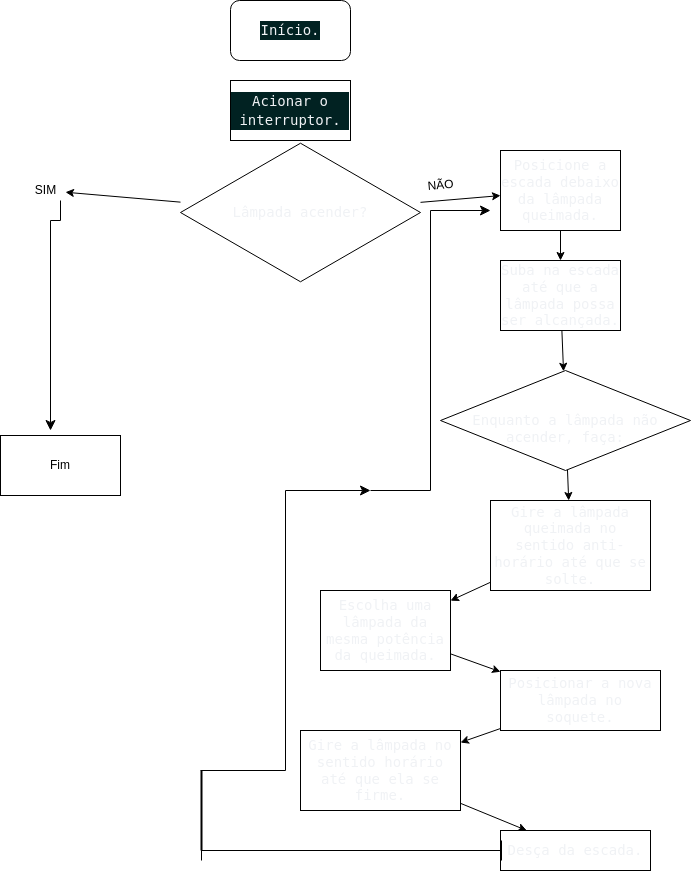
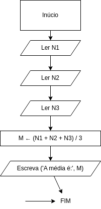
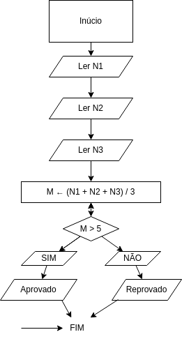

(__)- Início ou fim do fluxograma.
/_/ - Entrada ou saída de dados.
|_| - Instrução.
<_> - Ponto de decisão.
-> - Fluxo de dados e conexão

Professor: Said Sadique Adi
Professor: Marcelo Manzato
Representação esquemática de um algoritmo, feita através de gráficos que ilustram a transição de informações entre os elementos que o compõem.
Representa a lógica interna dos programas.
__
(__)- Início ou fim do fluxograma.
/_/ - Entrada ou saída de dados.
|_| - Instrução.
<_> - Ponto de decisão.
-> - Fluxo de dados e conexão
Início. Acionar o interruptor. Se a lâmpada não acender, então: Posicione a escada debaixo da lâmpada queimada. Suba na escada atá que a lâmpada possa ser alcançada. Enquanto a lâmpada não acender, faça: Gire a lâmpada queimada no sentido anti-horário até que se solte. Escolha uma lâmpada da mesma potência da queimada. Posicionar a nova lâmpada no soquete. Gire a lâmpada no sentido horário até que ela se firme. Desça da escada. Fim.
Início
Leia N1
Leia N2
Leia N3
M ← (N1 + N2 + N3) / 3
Escreva ('A média é:', M)
Fim
Simbologia
Com condição
